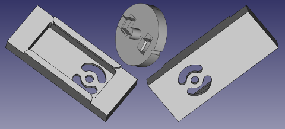
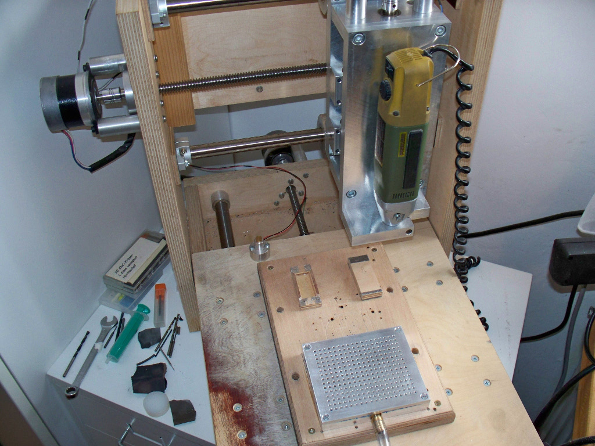
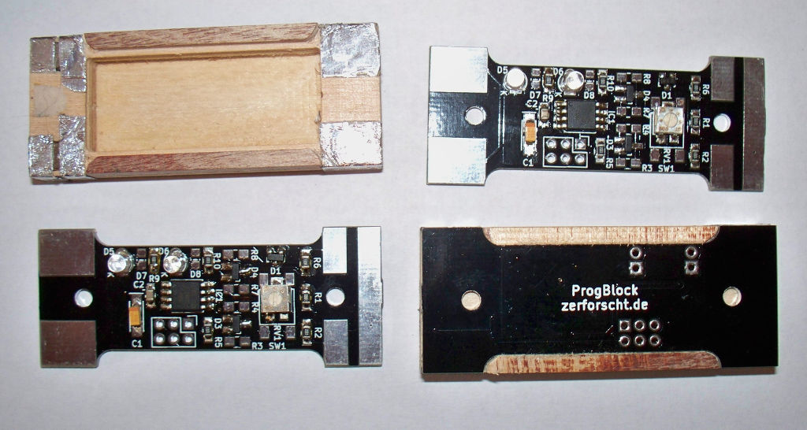
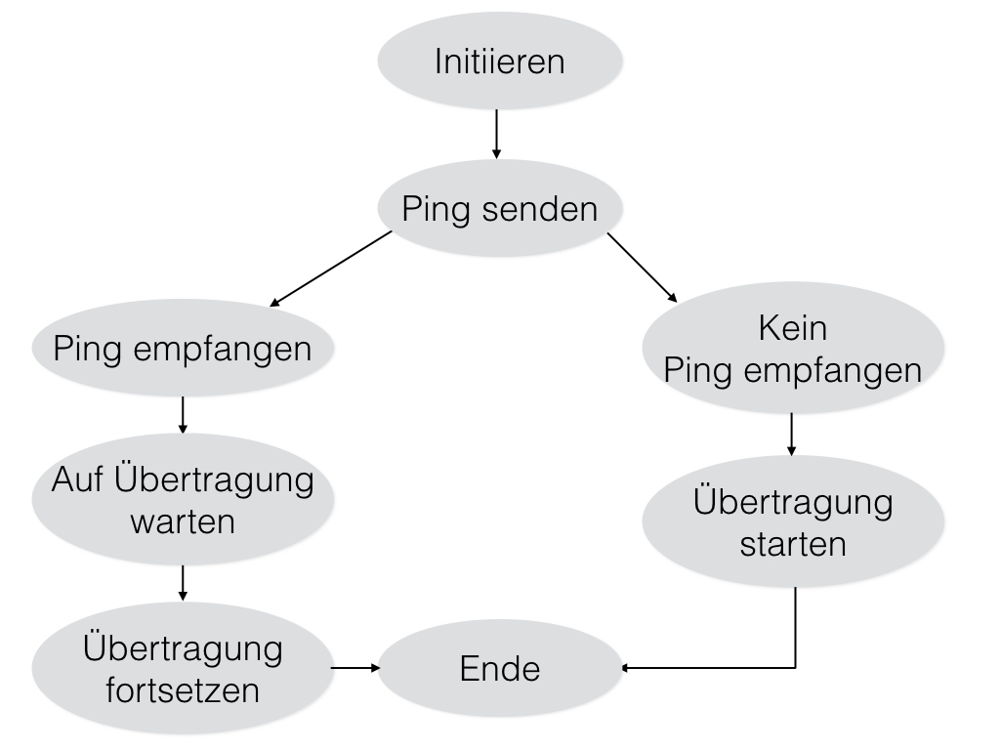
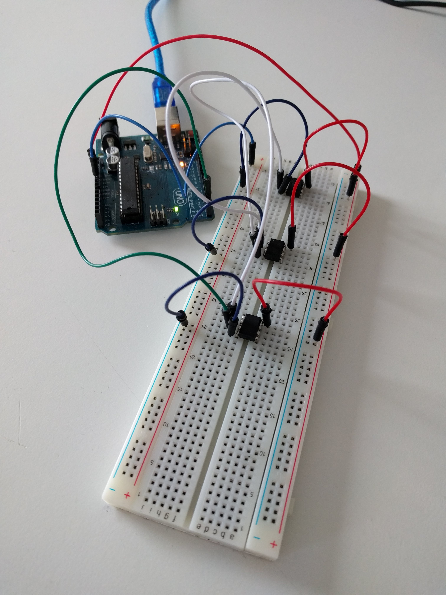
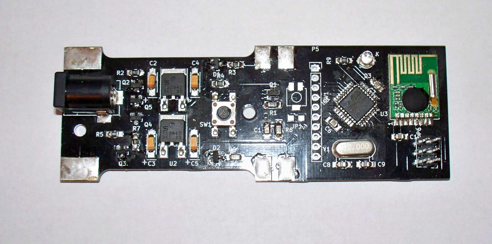

ETProjekt
Programmierbares Auto
Lenard Wiedekamp, Leonard Göhrs
Aufgabenstellung
- Kindern programmatische Denkweise vermitteln.
- Spielzeugauto umbauen
- Einfache, intuitive Bedienung.
Grundidee
- Bauklötze anreihen für Programmabfolge
- Übertragung auf Auto-Steuerung
- Abfahren von vorgegebenen Streckenaufgaben oder freies Programmieren
Projektteile
- Bauklötze
- Übetragungseinheit
- Roboter
Bauklötze
Gehäuse
Werden gefräst oder 3D-Gedruckt
Gehäuse
Umwandlung der 3D-Modelle in Produktionsdateien:
- Zum Drucken steht gute, freie Software zur Verfügung
- Zum Fräsen nicht …
- … Also selber schreiben
Gehäuse
PYCode Werkzeugpfad in Python beschreiben und in GCode umwandeln

Gehäuse
Gehäuse
- Magnete sorgen für mechanische Verbindung
- Alufolie und DsK sorgen für elektrischen Kontakt (VCC, GND, RX, TX)
Platine
Enthält ATtiny85, Schutzbeschaltung, LEDs und einen Taster/ein Potentiometer
Platine
Wird von hinten in das Gehäuse gedrückt
Firmware <3
- Verfügt über kodierte Schritte für das Auto
- Gibt diese Schritte an den nächsten Block weiter
- Dieser gibt diese Schritte, zusammen mit seinen eigenen, wiederum an den nächsten Block weiter
Firmware <3
 Firmware <3
b_rcvd>>=1;
if (RX_PIN & _BV(RX_NUM)) {
// Sender sent a high bit
b_rcvd|= _BV(7);
}
if (uart.flags.forward) {
// Forward the data bit if forwarding is requested
if (b_send & 0x01) TX_PORT|= _BV(TX_NUM);
else TX_PORT&= ~_BV(TX_NUM);
b_send>>=1;
}Übertragungseinheit
Gehäuse
Wie bei den Klötzen
Platine
Enthält ATmega328, Strombegrenzte Spannungsversorgung für die Klötze und ein Funkmodul
Platine
Spannungsversorgung über Steckernetzteil oder Batteriepack
Firmware
- Stellt Brücke zwischen Klötzen und Auto her
- Könnte aktuell ausgeführten Klotz auf Display anzeigen
Auto
Basis
- Basiert auf der Hardware eines LEGO® Spybotics®
-
Elektronisch komplett entkernt und mit einem
ATtiny44ATmega8ATmega328 ausgestattet - Um Trademark Quatsch zu umgehen als dk_base (Denmark base) bezeichnet
Platine
- Einseitig, auf CNC-Maschine ausgefräst.
- Enthält nicht (mehr) mehr als zwei H-Brücken
Firmware
- Führt die in den Klötzen kodierten Schritte aus
- Eine vernünftige Kodierung könnten wie folgt aussehen:
- Zwei Bytes Befehl. Z.B. 0x0001, Setze Motoren
- Zwei Bytes Parameter. Z.B. 0x7f7f Motor rechts und links. Vollgas vorran

"Das muss mehr reinballern"
- Leonard
Virtuelle Maschine
Links: Spezifikation / Implementierung
Instr bits | Name | Description
------------+------------+------------
00 00 01 00 | SOV | Skip if last arith. instr. gen…
00 00 01 01 | SPU | Push current PC and RC to stack
00 00 01 10 | SPO | Pop RC and fill PC buffer from stack
00 00 01 11 | SPJ | Perform the jump in the PC buffer
| |
00 00 10 XX | LD XX | Load next Byte into register XX a…
| |
00 01 00 XX | DEC XX | Decrement register XX by one
00 01 01 XX | INC XX | Increment register XX by one
00 01 10 XX | NOT XX | Bitwise NOT of Register XX
00 01 11 XX | SRR XX | Shift register right by one bit
...
Virtuelle Maschine
- 20 Opcodes. 8-bit instruction Kodierung um Speicherplatz zu sparen.
- Drei general purpose 8bit register. Ein zero Register.
- Acht IO Adressen. Aktuell genutz für: Motor1, Motor2, acht digitale Eingänge (z.B. Bumper Taster), acht digitale Ausgänge (z.B. LEDs), ein 8 bit Timer, 3 Ram Slots.
Programme
LD RA // Load motor speed and direction
64 // Fwd 50%
LD RB // Load time to drive for
120 // Two seconds
STA Mot1 RA // Set Motor 1
STA Mot2 RA // Set Motor 2
STA Timer RB // Setup timer
loop:
LDA Timer RC // Read timer value
SEQ RZ RC // Skip next instruction if time is up
JBW loop // Loop
STA Mot1 RZ // Stop Motor 1
STA Mot2 RZ // Stop Motor 2Assembler (brkas)
$ ./brkas.py source_in small.brkas bytecode_out small.brbc
$ hd small.brbc
00000000 09 40 0a 78 e1 e5 f2 d3 a3 31 e0 e4- Übersetzt Programmtext in Bytecode
- Geschrieben in Python
- Enthält auch einen Disassembler
Gelerntes
Arduino / Mikrcontroller
Versionsverwaltung (git)
commit 0df71ce5066dcfa8f88049d3dd0e514a56db26ab
Author: Leonard Göhrs leonard@goehrs.eu
Date: Thu May 26 11:38:07 2016 +0200
Simplified uart byte gap handling by not using overflow interrupt
commit 6c08c638a394d831478dbb182877980d20eac091
Author: Lenard Wiedekamp lenwdk@gmail.com
Date: Wed May 25 20:51:33 2016 +0200
Better active clock
Unit tests
- Mikrocontroller verfügen über kaum Ein-/Ausgabemöglichkeiten
- Programme zu Debuggen deshalb sehr mühsam
- Deshalb: Tests schreiben, die auf dem Host Computer ausgeführt werden und prüfen, ob sich Teile des Programms wie erwartet verhalten.
Unit tests
static char *test_op_jfw()
{
struct vm_status_t vm;
uint8_t prog[]={0x44, 0x15, 0x24, 0x15, 0x15, 0x15, 0x15, 0x15, 0x15};
// MOV RA RZ, INC RA, JFW 4, INC RA, INC RA, INC RA, INC RA, INC RA, INC RA
bzero(&vm, sizeof(vm));
vm.prog= prog;
vm.prog_len= sizeof(prog);
vm_run(&vm);
mu_assert("Something went wrong in program containing JFW",
vm.regs[0] == 3);
return 0;
}Unit tests
$ make tests
gcc -ffunction-sections -fdata-sections -Os -Wall -Wextra \
-pedantic -Werror -Wshadow -Wstrict-overflow \
-fno-strict-aliasing -std=c11 \
-I ../ -o tests/tst-opcodes.test tests/tst-opcodes.c
./tests/tst-opcodes.test
ALL TESTS PASSED
Tests run: 10
rm tests/tst-opcodes.testAusblick
Alle Quelldateien stehen unter einer freien Lizenz zum Download bereit
- Firmware/Assembler - GPLv3+ - github.com/hnez/BlockBot-firmware
- Spezifikationen - GNU FDL - github.com/hnez/BlockBot-documentation
- PCB Design - CERN OHL - github.com/hnez/BlockBot-pcb
- Gehäuse Design - CERN OHL - github.com/hnez/BlockBot-housing
Ende
Vortragsfolien:
leonard.goehrs.eu/etp